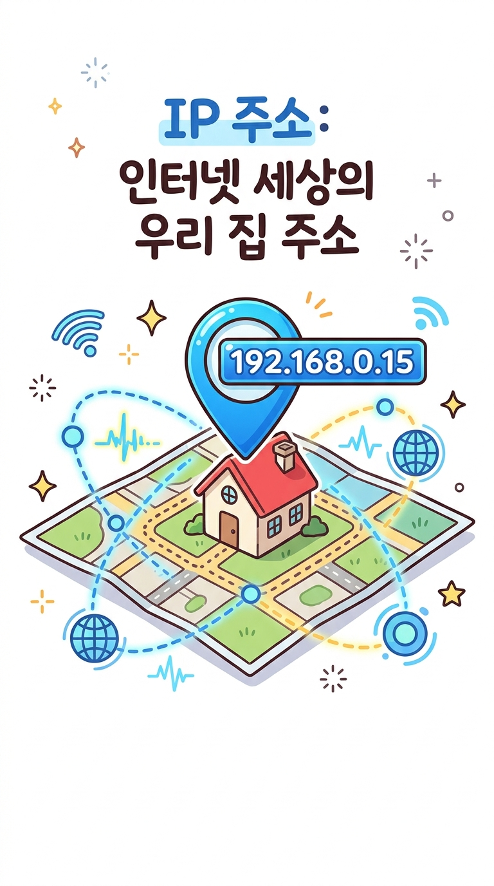
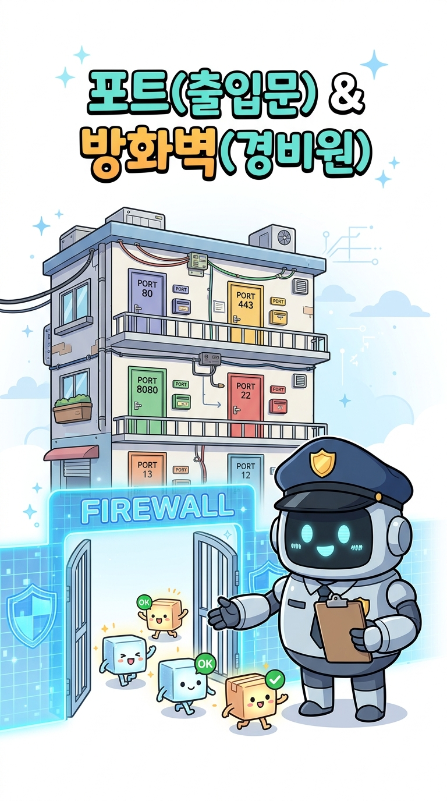
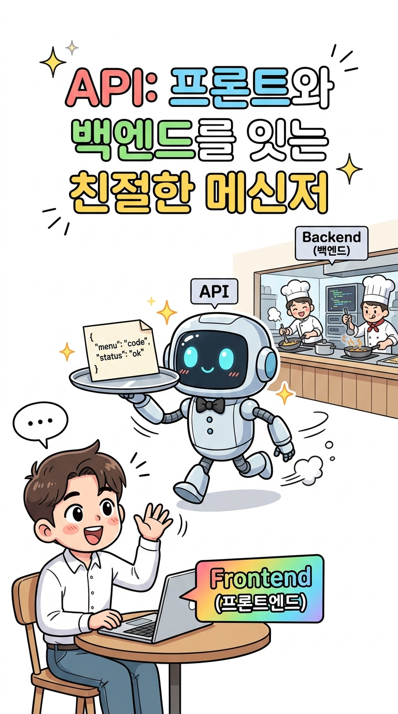
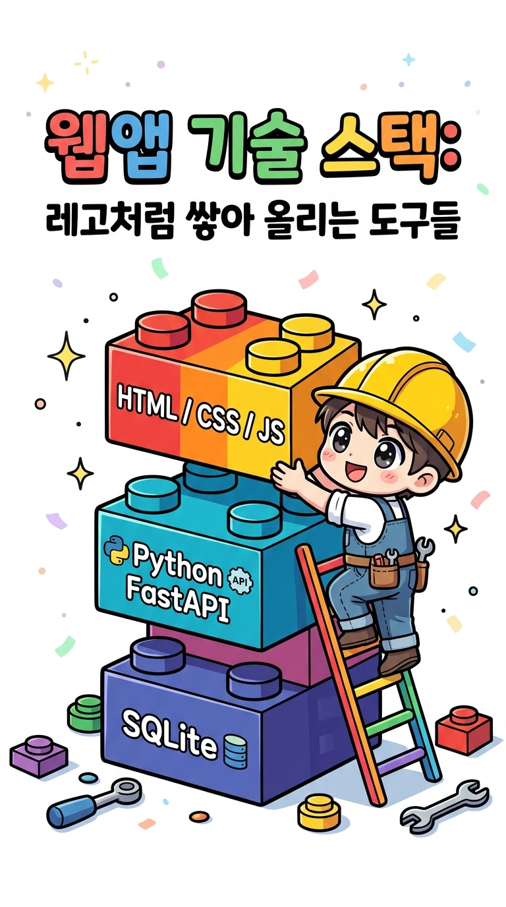
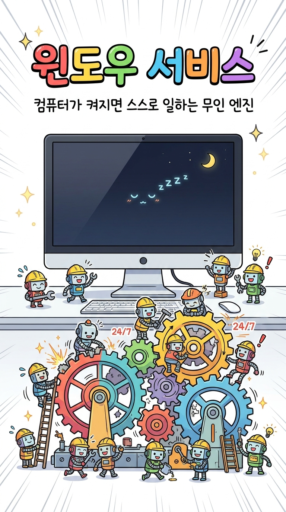

CMD창 & 워크스페이스 (나만의 작업 책상)
명령 프롬프트(CMD)는 컴퓨터와 직접 대화하는 가장 오래된 창입니다. 전용 워크스페이스 폴더 안에서 제미나이 CLI를 호출해 첫 작업을 시작합니다.
파워쉘 & 관리자 권한 (시스템 마스터키)
시스템 설정이나 서버 프로그램을 설치할 때 꼭 필요한 '관리자 권한으로 실행'. 권한 부족 에러를 해결하는 황금 열쇠입니다.

아이피(IP) 주소 (디지털 우리 집 좌표)
인터넷에 연결된 모든 기기가 부여받는 고유한 주소. 사설 IP(공유기 안)와 공인 IP의 차이 및 localhost(나 자신)를 완벽 이해합니다.

포트 & 방화벽 (아파트 출입문과 경비원)
IP가 아파트 건물이라면 포트(Port 8080)는 동호수 출입문! 수상한 손님을 차단하는 방화벽의 문을 여는 인바운드 규칙을 배웁니다.

API & JSON (식당의 친절한 웨이터)
손님(프론트엔드)과 주방(백엔드) 사이에서 JSON 주문서를 나르는 웨이터! GET, POST 요청으로 데이터를 실시간 교환합니다.

웹앱의 기술 스택 (레고 블록 조립)
HTML/CSS/JS(화면) + FastAPI(서버) + SQLite(DB). 레고 블록처럼 쌓아 올려 내 손으로 완성하는 풀스택 아키텍처.
데이터베이스 DB (초고속 전자 금고)
서버를 껐다 켜도 데이터가 영원히 보존되는 SQLite 금고! 파일 하나로 복잡한 서버 설치 없이 ACID 무결성을 보장합니다.

윈도우 서비스 자동실행 (보이지 않는 그림자 일꾼)
퇴근해도 컴퓨터 전원만 켜지면 스스로 작동하는 윈도우 백그라운드 서비스(NSSM). 장애 시 자동 재기동(Self-Healing)을 갖춥니다.
제미나이 화면공유 실시간 질의 (스마트폰 학습 현장)
스마트폰에서 이 자료를 열어두고 제미나이 화면공유를 켠 채 '이 다이어그램에서 포트가 무슨 뜻이야?'라고 실시간 음성/화면으로 묻고 배웁니다.
사내 AX 혁신 완성 (작은 웹앱이 만드는 미래)
내가 만든 작은 웹앱으로 팀의 반복 업무를 없애고, 소스코드와 지식을 공유하며 사내 AI 전환의 진정한 주역이 됩니다.